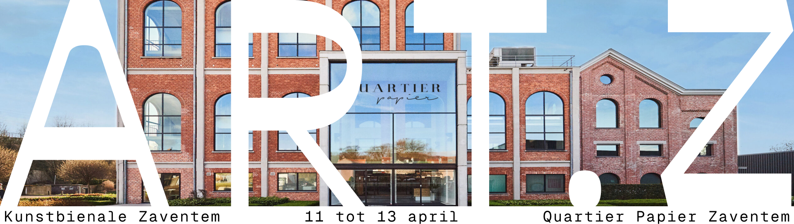

Art Meets Kiwanis
Art Meets Nature toont meer dan 600 kunstwerken van 60+ kunstenaars uit zeer verscheidene kunststromingen en genres: schilderijen, tuinbeelden, fotografie, sculptuur en keramiek. Naast origineel en weinig tentoongesteld werk van Panamarenko, Raveel, Alechinsky, Karel Appel, Bram Bogart.. zal er heel wat kunst te zien en te koop zijn van verscheidene hedendaagse Belgische en Internationale topkunstenaars. Een rijk geschakeerd artistiek avontuur. Vorige editie bezochten meer dan 3.500 bezoekers deze tentoonstelling en vonden er meer dan 100 kunstwerken een nieuwe locatie. Er is dan ook al kunst beschikbaar vanaf € 400 tot € 50.000.
Wie weet vindt u wel dat éne beeld of dat fantastische schilderij dat uw blik even vasthoudt en waar u de rest van uw leven van geniet, een blikvanger in uw huis of tuin.
Wie tijdens dit weekend een kunstwerk koopt, draagt meteen ook zijn steentje bij aan een goed doel. De netto opbrengst van de tentoonstelling wordt door Kiwanis Zaventem Airport volledig doorgestort aan organisaties die het welzijn van minderbedeelde kinderen en geestelijk gelijkgestemden behartigen.
Papier Quartier
een beetje tekst, misschien zelfs een icon?